아트풀센츠코리아옷장에 걸어 두는
옷장에 걸어 두는
작은 꽃 작품
보태니컬 왁스사셰 4색 컬렉션
취향에 따라 고르는 16가지 향
소이왁스 · 손으로 놓은 꽃 · 네 컬렉션
Botanical Wax Sachets
향도 좋고,
보기에도 좋았으면
옷장 문을 열 때 향이 느껴졌으면.
걸어 둔 모습도 마음에 들었으면.
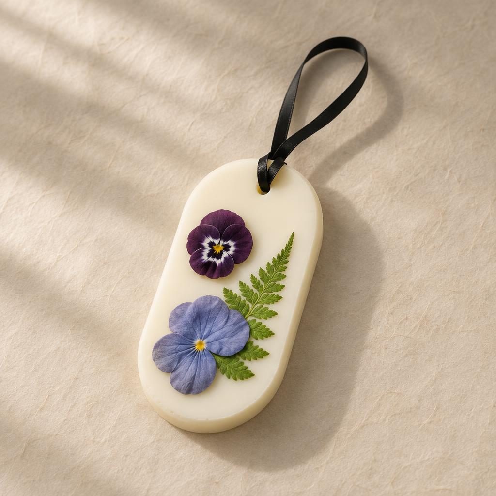
걸어 두거나
서랍에
가볍게
꽃이 보이는
고체 방향제예요.
리본을 걸거나 서랍에 놓아 사용하세요.
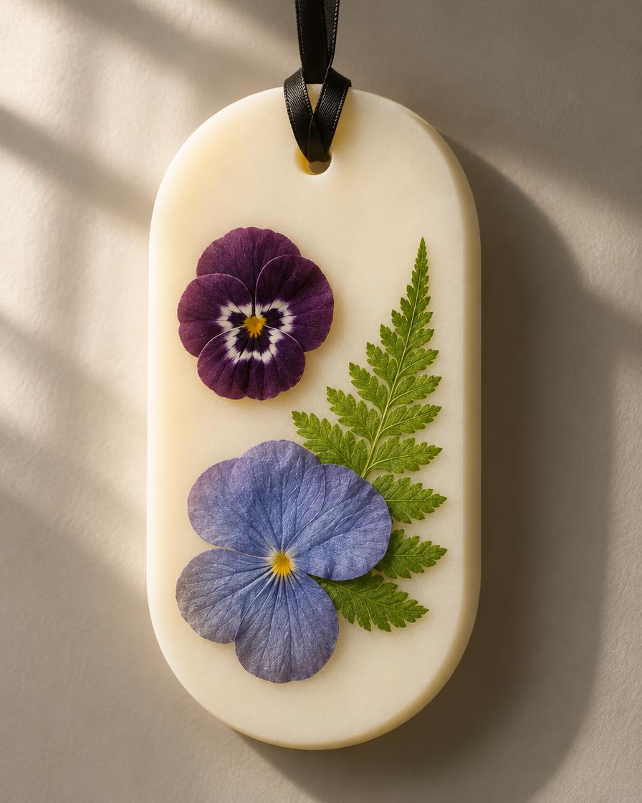
Point 01
소이왁스 위에
손으로 놓은 꽃
꽃과 잎, 허브를 소이왁스 위에 하나씩 손으로 올려요.
Point 02
꽃의 배치는
조금씩 달라요
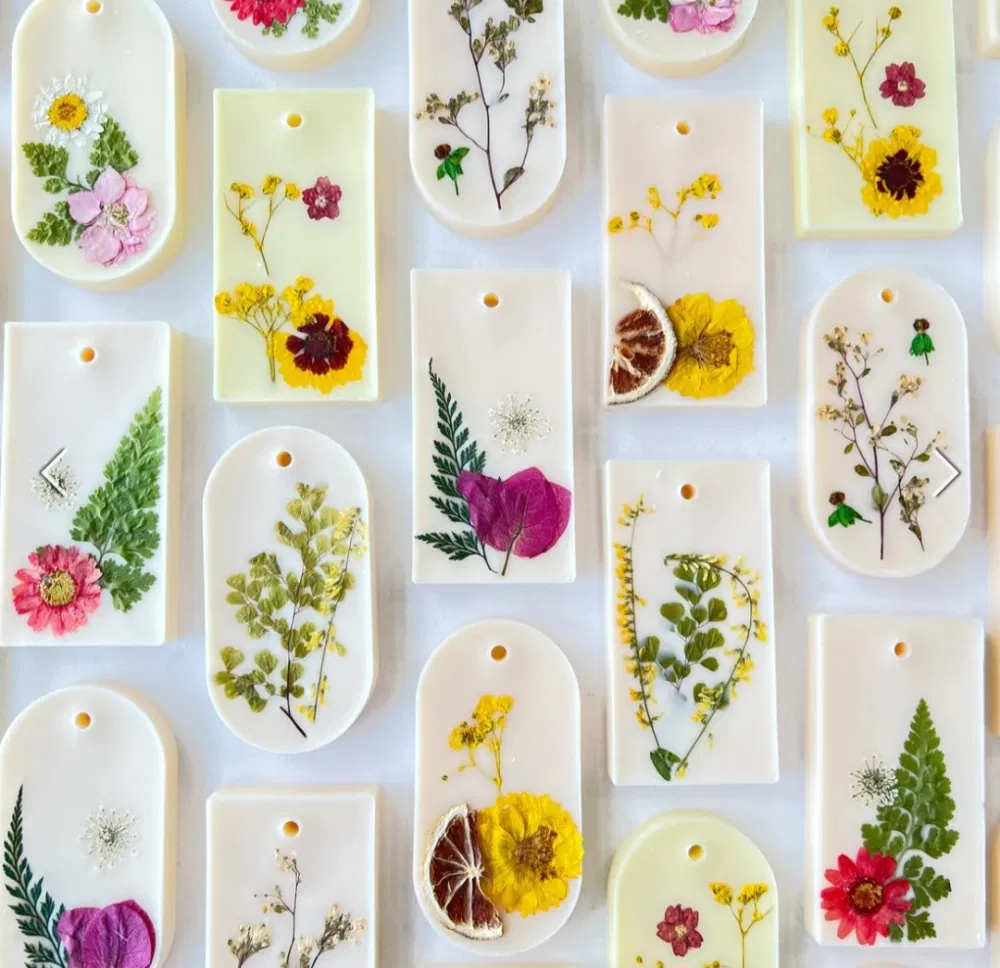
둥근 모서리형직사각형
시즌과 제품에 따라 꽃의 종류와 배치가 사진 속 예시와 다를 수 있어요.
옷걸이 옆에 한 점
서랍 속에 한 점
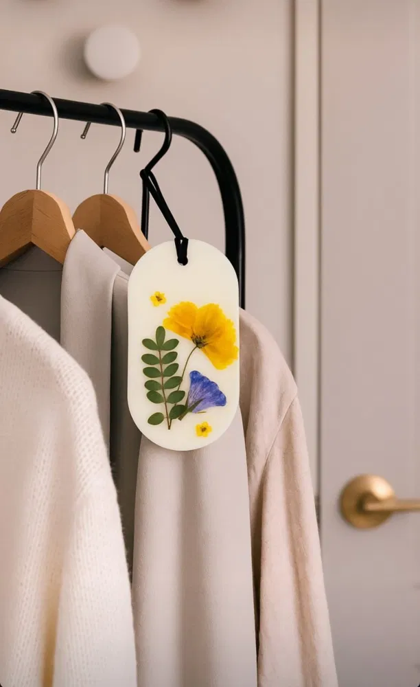
리본으로 걸어요.
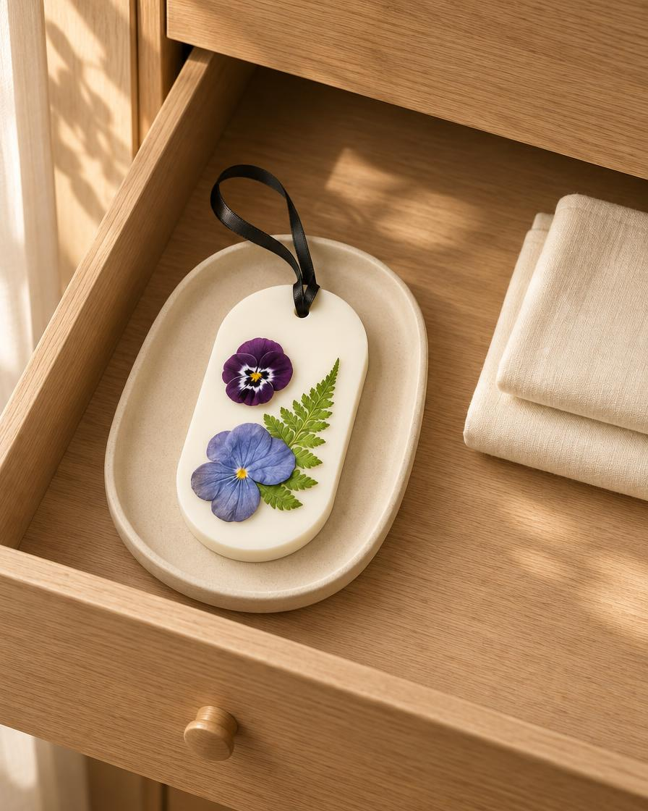
옷감과 닿지 않게 놓아요.
How to use
직사광선을 피해
서늘한 곳에
걸거나 놓기옷걸이 또는 서랍에 두세요.
옷감과 띄우기닿을 수 있으면 티슈로 감싸세요.
직사광선 피하기서늘하고 건조한 곳에 두세요.
Scent Collection
럭스 누아르
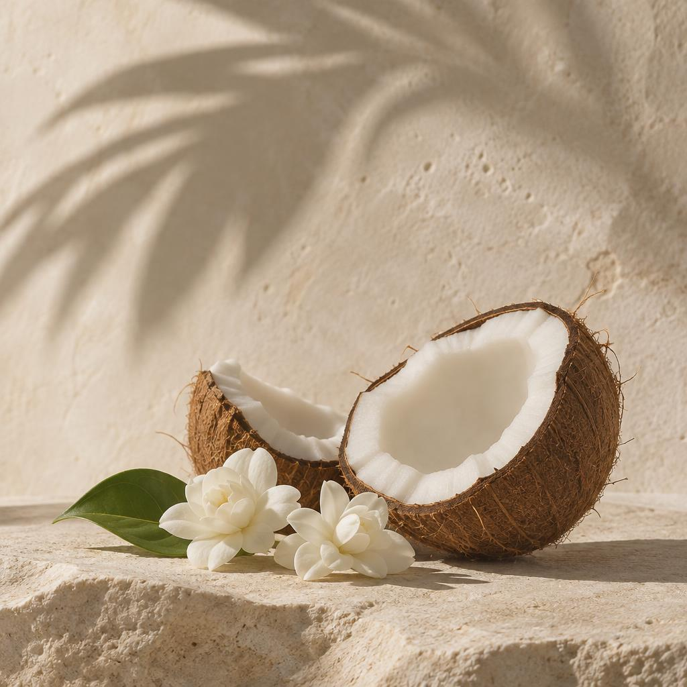
- 피카케＋ 코코넛 밀크
- 만다린＋ 시트러스 아가베
- 대나무＋ 오이
- 씨쏠트＋ 자스민 플라워
Scent Collection
보헤미안
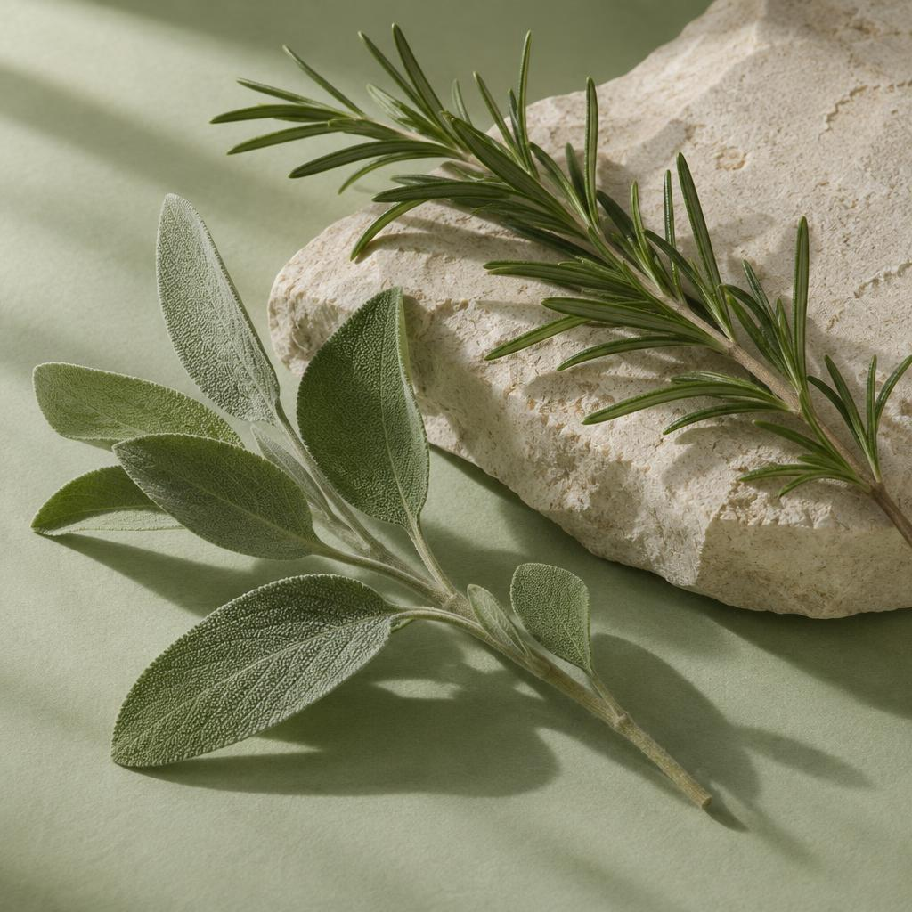
- 씨쏠트＋ 오키드
- 샌달우드＋ 네롤리
- 로즈마리＋ 세이지
- 민트＋ 유칼립투스
Scent Collection
아일랜드
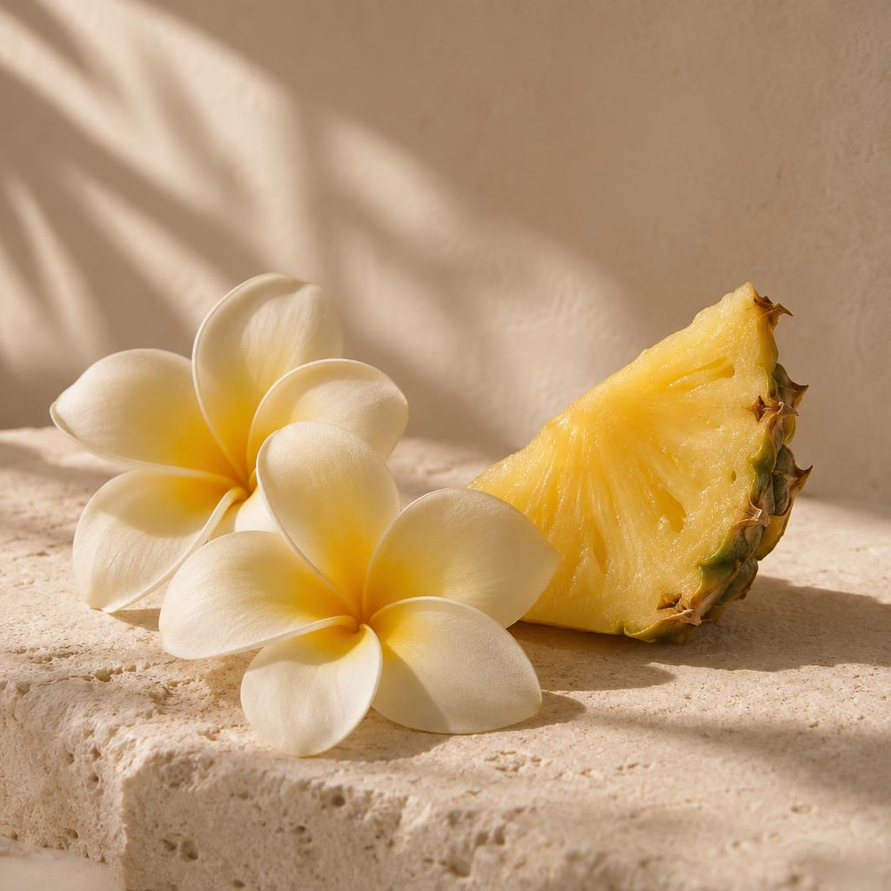
- 라하이나파인애플 · 코코넛
- 마우이 누이플루메리아 · 가드니아
- 아일랜드히비스커스 · 튜베로즈
- 브리즈망고 · 릴리코이
Scent Collection
클래식
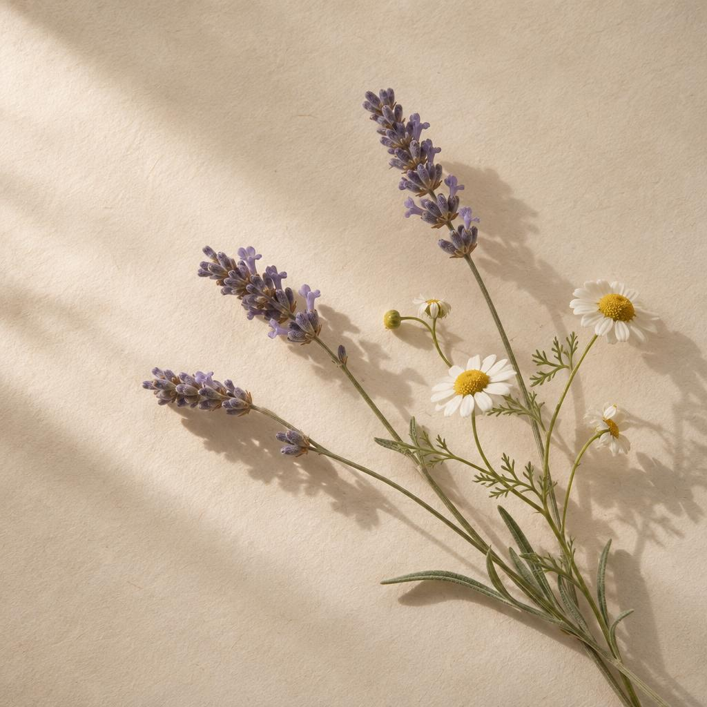
- 리플렉트오키드 · 플럼
- 썬라이즈네롤리 · 그레이프프룻
- 릴렉스라벤더 · 카모마일
- 에너자이즈베르가못 · 피카케
Information
꽃이 놓인 사셰와
검은 리본 상자
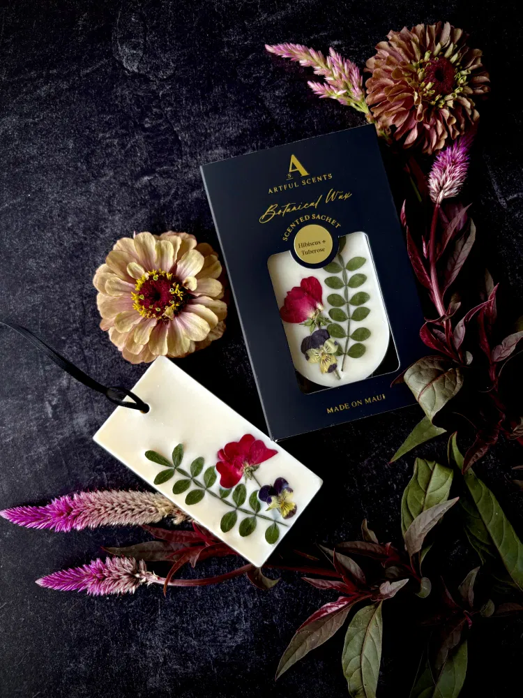
| 상품명 | 보태니컬 왁스사셰 4색 컬렉션 |
|---|---|
| 제조사 | 아트풀센츠사 |
| 원산지 | 미국 |
| 판매 페이지 표기 중량 | 102.6g |
| 소재 | 소이왁스 |
| 포장 | 리본이 달린 검은 상자 |
판매가와 배송비
스마트스토어 판매가
61,200원무료배송
스마트스토어 2026.11.23 확인 기준
현재 판매가와 배송비는 주문 화면에서 확인해 주세요.
4 Scent Collections
향을 고르고
꽃을 걸어 두세요
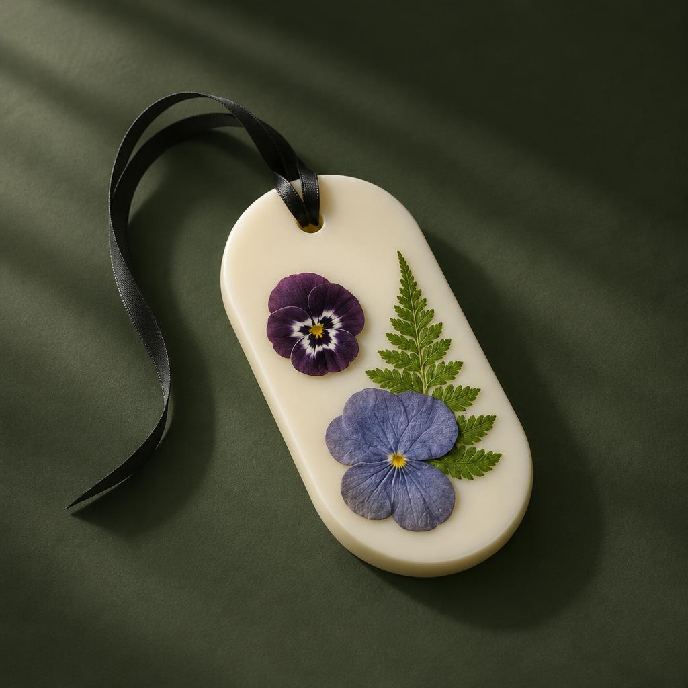
럭스 누아르보헤미안아일랜드클래식
아트풀센츠코리아